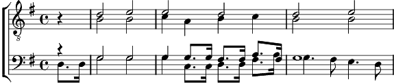

1. Le soleil luit sur la ville et sur les champs
Tout là-bas un paysan suit sa charrue en chantant.
Deux messieurs bien, Parlant de chasse et de chien,
dans un bar américain, boivent le whisky du matin.
2. Un enfant bleu, dans un berceau de bois blanc,
Fermant ses yeux innocents, meurt tout doux, tout doucement.
La Seine plie sous le ventre des chalands,
Sur la rive deux enfants s'enlacent en souriant.
3. Cent mineurs crient sous le poids d'un continent,
Là-haut passe un régiment, il y aura dix survivants.
Le soleil luit, le soleil, le soleil luit.